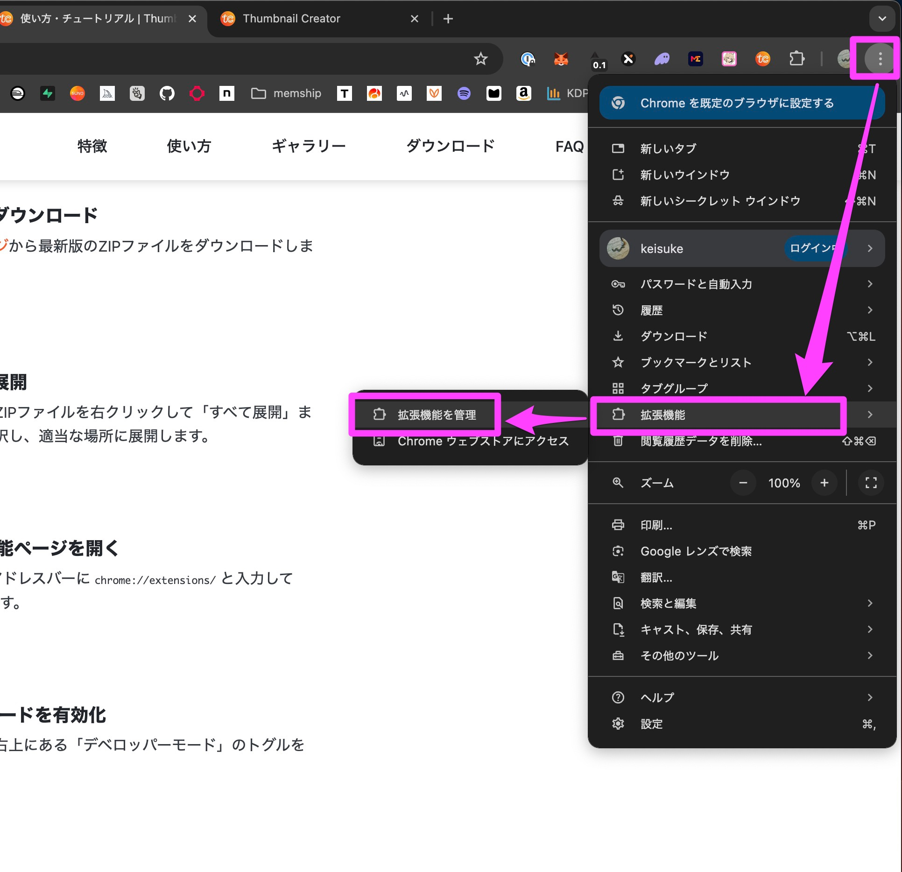
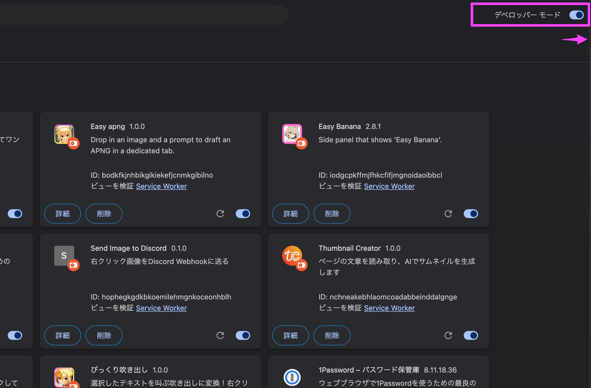
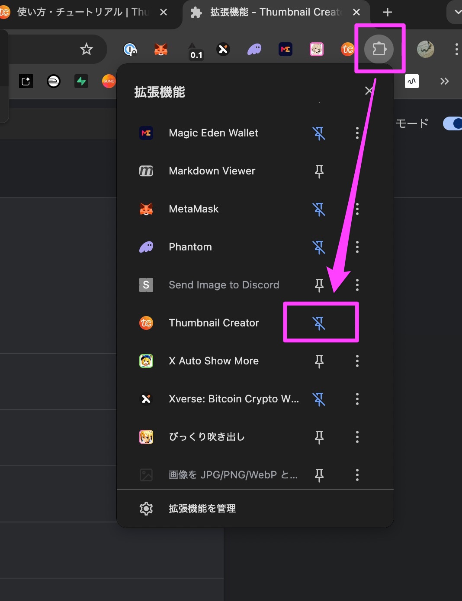
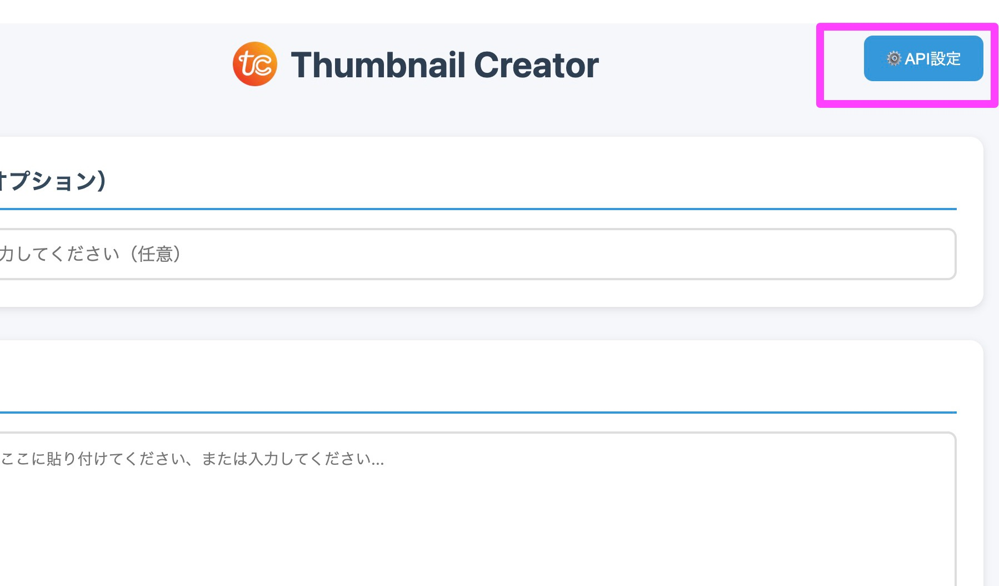
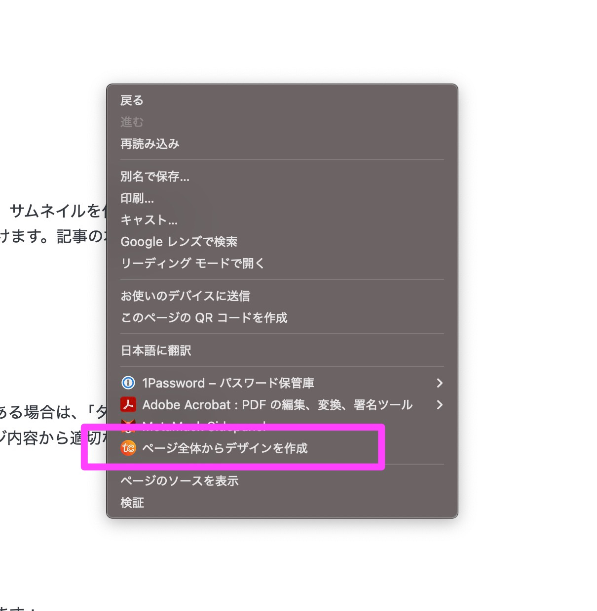

Thumbnail Creatorのインストールから基本的な使い方、高度な機能まで詳しく解説します。
Thumbnail CreatorはChrome拡張機能として動作します。以下の手順でインストールしてください。
ダウンロードしたZIPファイルを右クリックして「すべて展開」または「解凍」を選択し、適当な場所に展開します。
Chromeを開き、右上のメニュー（⋮）→「拡張機能」→「拡張機能を管理」をクリックします。

拡張機能ページの右上にある「デベロッパーモード」のトグルをオンにします。

「パッケージ化されていない拡張機能を読み込む」ボタンをクリックし、展開したフォルダを選択します。
拡張機能がインストールされたら、ツールバーの拡張機能アイコン（パズルのピース）をクリックし、Thumbnail Creatorの横にあるピンアイコンをクリックして固定します。これでツールバーにアイコンが常に表示されるようになります。

ツールバーに固定されたThumbnail Creatorのアイコンをクリックすることで、いつでも拡張機能を起動できます。
Thumbnail Creatorを使用するには、FAL AIのAPIキーが必要です。
FAL AI公式サイトにアクセスし、アカウントを作成します。
Thumbnail Creatorを起動し、右上の「⚙️ API設定」ボタンをクリックして、取得したAPIキーを入力して保存します。

APIキーはブラウザのローカルストレージに平文で保存されます。共有PCや公共のPCでは使用しないでください。APIキーが漏洩すると、第三者によって不正利用される可能性があります。
サムネイルを生成する基本的な手順を説明します。
サムネイルを作成したいWebページ（ブログ記事、Brainの記事など）を開きます。
ページ上の任意の場所で右クリックし、表示されたメニューから「ページ全体からデザインを作成」を選択します。

用途に応じてアスペクト比を選択します：
• 16:9 - YouTube、Brain、ブログのアイキャッチ
• 4:5 - Instagramフィード
• 1:1 - 正方形（Instagram、Facebook）
• 9:16 - ストーリー、Shorts、TikTok
サムネイルの配色を選択します。「おまかせ」を選ぶと、AIがコンテンツに適した色を自動選択します。
好みのデザインスタイルを選択します：
• モダン風 - 洗練されたシンプルなデザイン
• ビビッド風 - カラフルで目を引くデザイン
• プロフェッショナル風 - ビジネス向けの落ち着いたデザイン
• ミニマル風 - 余白を活かしたシンプルなデザイン
選択したデザインの「生成」ボタンをクリックします。通常30秒〜1分程度で生成が完了します。生成された画像は自動的にダウンロードされます。
独自のデザインスタイルを作成して、オリジナルのサムネイルを生成できます。
「新規グループを追加」ボタンをクリックして、グループ名を入力します。
「+ デザインを追加」ボタンで新しいデザインを追加します。各デザインには以下を設定できます：
• ID - デザインの識別子
• 名前 - 表示名
• プロンプト - 画像生成用のプロンプト（英語推奨）
• サンプル画像URL - 参考画像のURL（オプション）
設定を保存すると、作成したデザイングループが新しいタブとして表示され、すぐに使用できます。
作成したデザイングループをJSON形式でエクスポートし、他の環境で使用したり、他のユーザーと共有できます。
エクスポートしたいグループを選択し、「エクスポート」ボタンをクリックします。JSONファイルがダウンロードされます。
「インポート」ボタンをクリックし、エクスポートしたJSONファイルを選択します。デザイングループが追加されます。
以下の点を確認してください：
「API key is invalid」などのエラーが表示される場合：
生成に時間がかかりすぎてタイムアウトする場合：
拡張機能アイコンをクリックしても反応がない場合：
上記の方法を試しても問題が解決しない場合は、開発者のXアカウント（@kei31）にDMでお問い合わせください。